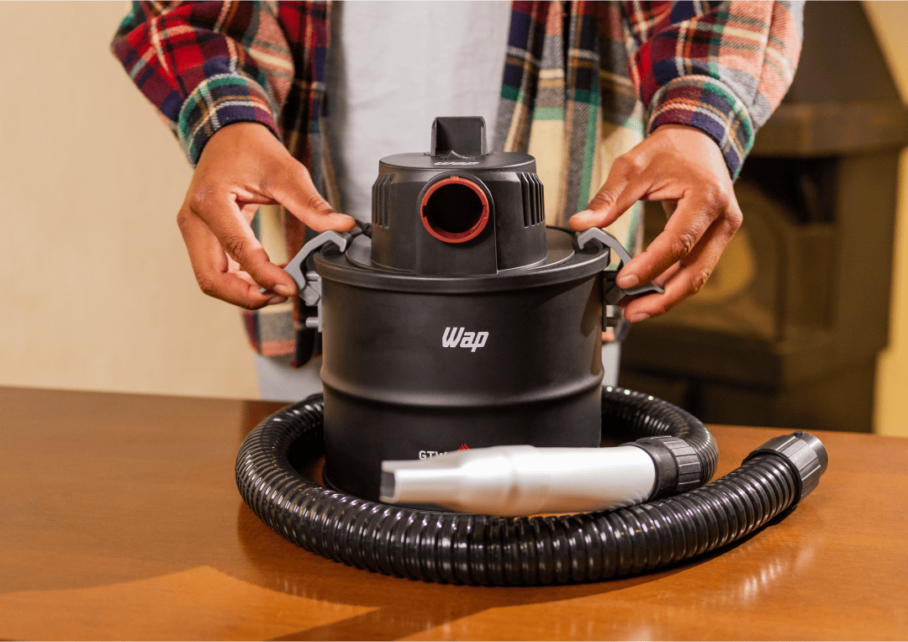
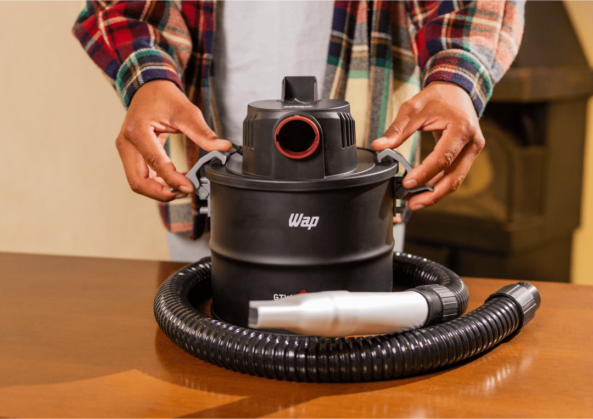

Aspirador de Cinzas
WAP GTW ASH
Aspirador de Cinzas
WAP GTW ASH
Solução completa para uma limpeza potente e segura
Aproveite a festa em torno da churrasqueira e o calor aconchegante da lareira ou junto ao fogão a lenha sem se preocupar com a sujeira. Com o aspirador de cinzas WAP, a limpeza é fácil, para que você aproveite todos os momentos sem preocupações.

Solução completa para uma
limpeza potente e segura
Aproveite a festa em torno da churrasqueira e o calor aconchegante da lareira ou junto ao fogão a lenha sem se preocupar com a sujeira. Com o aspirador de cinzas WAP, a limpeza é fácil, para que você aproveite todos os momentos sem preocupações.

Compacto e portátil
O design inteligente facilita o transporte e o armazenamento, além de uma limpeza eficiente.
Recipiente
de aço
Resistente e durável, ele está pronto para lidar com a aspiração de cinzas e detritos do dia a dia.
Filtro
lavável
Proporciona uma experiência de limpeza descomplicada, eliminando ácaros e bactérias.
Solução inteligente para a
limpeza de cinzas frias

 

Aspiração versátil da churrasqueira à lareira
Pronto para transformar sua rotina de limpeza, o aspirador de cinzas WAP é equipado com uma variedade de acessórios, projetados para oferecer faxina completa. Os bicos curvo e canto removem detritos em áreas de difícil acesso mais rápido.
Portátil e leve, sua alça de transporte permite que a limpeza vá para onde você for com conforto. A mangueira de sucção flexível, revestida com trama de aço, se adapta a qualquer desafio com versatilidade e liberdade de movimento durante as tarefas.
IDEAL PARA
Limpeza profunda para você
respirar tranquilo
Desenvolvido para remover as cinzas resultantes da queima de carvão e lenha, o Aspirador de Cinzas WAP GTW ASH vai além, eliminando até as partículas mais finas que podem prejudicar a qualidade do ar, tudo graças ao seu Filtro HEPA.
Com sua capacidade de filtragem lavável, o filtro retém as menores partículas de poeira, alérgenos e outros contaminantes do ar, proporcionando uma limpeza profunda, que contribui para ambientes mais saudáveis em sua casa.
Com o GTW ASH, você está no comando da limpeza
Acenda, apague e limpe toda as cinzas frias da sua churrasqueira, lareira ou fogão a lenha com o Aspirador de Cinzas GTW ASH. Simplifique a limpeza dos espaços para aproveitar da festa com os amigos e a família, ou o calor aconchegante no inverno, sem se preocupar com a sujeira.